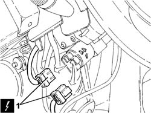
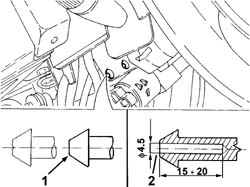
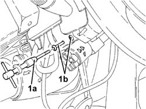
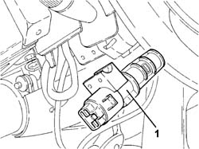

5520A10 ignition switch assembly - r+r
- Path
- Procedures > 55 ELECTRICAL EQUIPMENT > 5520 ENGINE STARTING > 5520A ignition switch > 5520A10 ignition switch assembly - r+r
- Kind
- repair procedure (removal / refitting; the operation number is the code)
- Applies to
- all engines; all production periods
- Interactive page
- https://sloeber94.github.io/elrnDB-fDbl/en/#/2584906
Applies to: all engines; all production periods
 Removing
Removing
 Refitting
RefittingDisconnect the battery negative terminal.
Op. 5520A14 IGNITION KEY LOCK BARREL - R+R
1. Disconnect the electrical connector for the ignition switch.
 | Name | Connector |
|---|---|---|
1 | Ignition switch |

Applies to: all engines; all production periods
1. Level the surfaces of the heads of the shear bolts securing the ignition switch.
2. Use a drill to make a hole of the size shown in the figure in the middle of the bolts securing the ignition.

Applies to: all engines; all production periods
1. Insert a left hand extractor (1a) in the openings made previously and undo the fixing bolts (1b).

Applies to: all engines; all production periods
1. Remove the ignition switch.

Applies to: all engines; all production periods
Refitting
RemovingPosition the complete ignition switch and secure it using the new shear bolts.
Connect the electrical connection.
| Name | Connector |
|---|---|---|
- | Ignition switch |
Op. 5520A14 IGNITION KEY LOCK BARREL - R+R
Connect the negative battery lead and check that the switch is working properly.